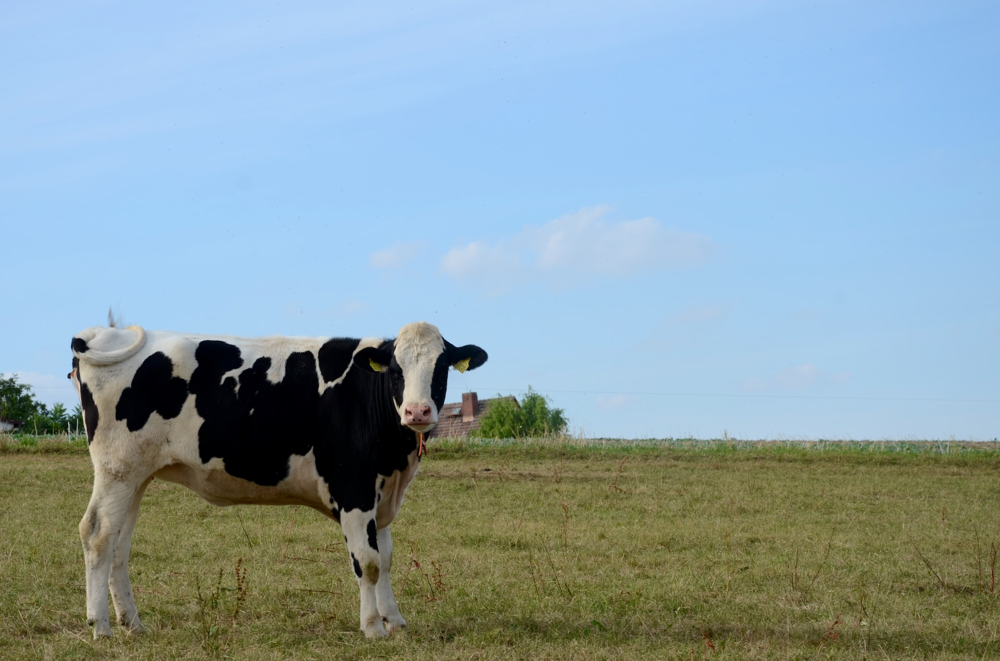
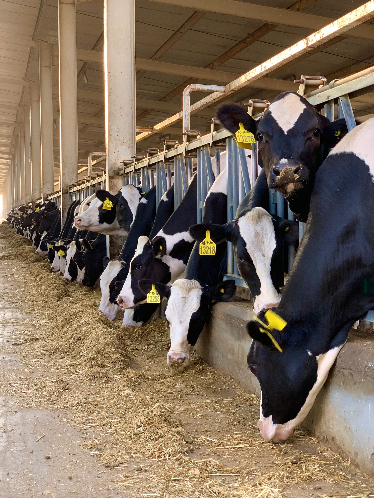
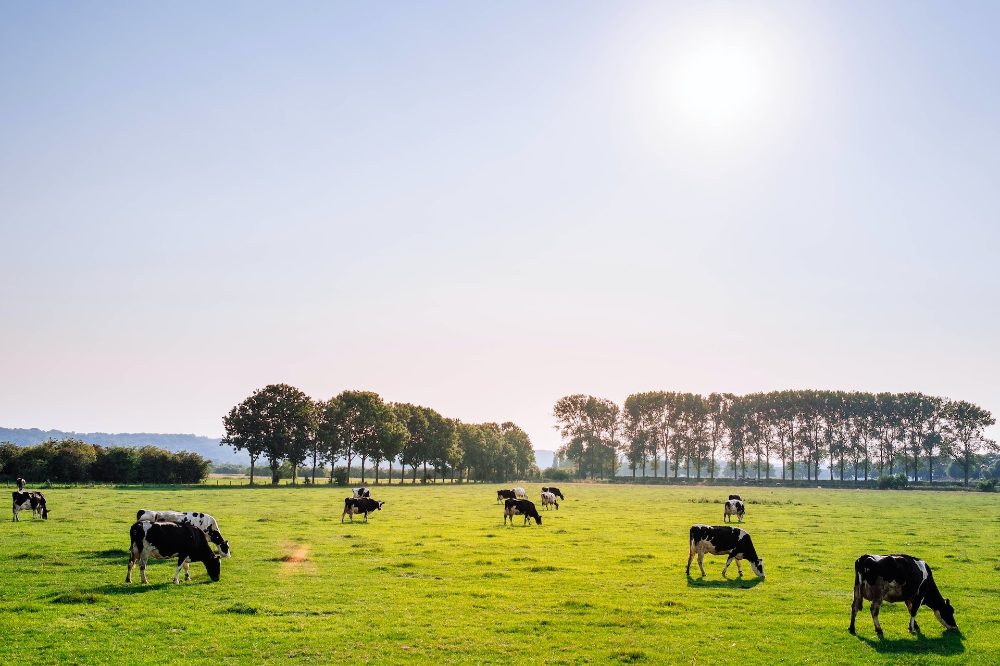

牧場資訊

田心牧場是一個位於寧靜鄉村的理想遠足勝地，致力於提供人們親近大自然、了解農業文化的機會。我們擁有寬闊的綠地、有機農田和友善的動物，為您打造一個離城市煩囂遠離，細心體驗農場生活的場所。我們的專業團隊致力於農業可持續發展，同時通過各種活動，讓大家更了解食物的來源、環保的重要性，並享受大自然的恩賜。
品牌精神

田心牧場的品牌精神根源於我們對大自然的敬畏和熱愛。我們深信，透過以尊重生態的方式種植、飼養，才能夠為人們帶來最優質、最健康的食材。我們的努力不僅是為了提供美味的農產品，更是為了營造一個可持續發展的未來。我們希望能夠透過田心牧場，將我們的熱情和關懷傳遞給每一個人，讓大家能夠與大自然和諧共處，同時品味純淨、健康的生活。
活動與參與

我們定期舉辦多樣化的活動，讓大家能夠親身參與農場生活。無論是擠牛奶、探索昆蟲世界，還是體驗騎馬，這些活動都讓您能夠近距離感受動植物的美好。同時，我們歡迎您加入我們的生態保育之旅，一同學習如何尊重環境，以及為可持續發展出一份心力。田心牧場期待與您攜手，體驗農場的樂趣，並一同護衛自然。